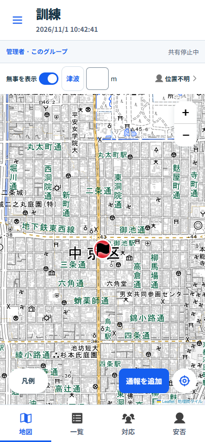

Tasukeai · 画面案（本番未適用）
地図の上は、必要な情報だけ。
役割・グループ名の帯と日時の行を外し、上部を64pxの1段に。
所属はメニュー、開始日時は「詳細」で確認します。
現在の表示
PWA 1.6.11。日時と所属の表示が2段に分かれています。

提案：上部を1段に
同じ高さの画面で、地図に約58px多く使えます。
☰と「詳細」を押すと、移動した情報を確認できます。
メニュー
上部表示の確認用です。地図・人数は架空データの表示見本で、登録・通信は行いません。
これまでの比較画面を見る